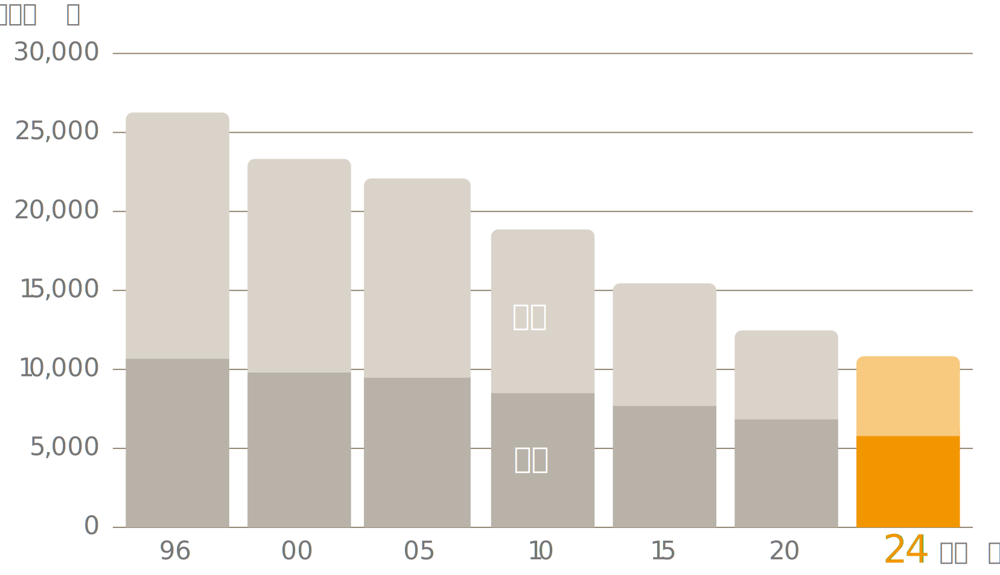

本を通じたナラティブなコミュニケーションができるSNS
UI/UX制作ツール
制作期間 2025.1 - 3 + 修正
自主制作 / 1人
Background
私の所属する、社会デザイン・ナラティブ論を専門とする教授の研究室にて行なっている「推し本夜語り」という好きな本を語りあう交流会から発想の元です。ヒトとヒト、ヒトとモノ、ヒトと場、ヒトと学びを、人に薦めるという「行為」を通して「読書体験」をつなぐUI/UXデザインをしました。
Process
アイデア検討や要件定義など前半のUXデザインは、Notionを使ってまとめながら進めました。制作の判断基準となるコンセプトとUIXU方針、ユーザーへの提供価値と機能まで丁寧に検討し、最終的にfigamでトンマナとコンポーネントを作ってUIにコンセプトを落とし込みました。
Problem
読書体験が閉鎖的になってしまっている
読書という行為は1人で行われるものであり、他者との交流が生まれにくい。良本を見つけても、それを共有する機会や場が少なく閉鎖的な体験になっている。一方で、 SNSはオープンな場として、ユーザー間のコミュニケーションが盛んなメディアである。共有や対話を伴わない読書体験は読書離れの要因の一つであると考えられる。
紙媒体の売上は、1996年から2024年にかけて、約6割減少しているというデータもある。

出版科学研究所.「日本の出版販売額」. 出版科学研究所オンライン. https://shuppankagaku.com/statistics/japan/Solution
本を通じたナラティブなコミュニケーションができるSNS
読書管理とSNSを融合させたアプリ。
人に本を勧め、また勧められる「語り」と「出会い」の場を創出する。
-
この本読んでみたい！を増やすこと
急上昇や新書、ユーザーの興味がありそうな情報を提示し、豊かなコンテンツを目指す。
-
情報収集しやすいこと
投稿の詳細から、他のユーザーやその本に関する情報を深掘りできるようにし、保存を充実させ、情報収集をしやすい設計にする。
-
親しみやすい設計であること
若い層からシニア層まで幅広く受け入れられる設計にする。SNSに慣れている人は迷いなく使うことができ、SNSを使わない人にも優しいユーザビリティを提供する。
Concept
ものがたりを物語る
ナラティブとは、語り・語られ・語り合うこと。閉鎖的になってしまっている読書体験を、一方通行ではなく、多様な立場によるコミュニケーション（ナラティブアプローチ）によって解放することを目指す。
Value
1.本を薦める価値
本の感想等を投稿。コメントやいいねなどのリアクションがつく。またユーザー間でのチャットもできる。
2.出会いを生む価値
タイムライン(ホーム)からおすすめやフォロワーなどユーザーの投稿を閲覧でき、興味を促す。読書の楽しさを共有し、新しい本との出会いを作る。
 ホーム
ホーム
3.見返せる価値
ブックマークに保存することで、店頭で読みたかった本を探す助けとなる。
Persona
読書が趣味の中年の男性
佐藤幸太郎(60)紙の本を読むのが好きで、人からの紹介された本をよく買う。また、書店に行って書籍のタイトルを忘れてしまうと、探すのに時間が掛かってしまう。書籍購入は一度に何冊も買うタイプ。
Positioning Map
(To-Be)CJM
- フェーズ
-
- 認知
- 利用
- その後
- 行動
-
- 店頭のポスターで「推し本ライブラリ」を知る
- インストールして
利用し始める - 気になった本を保存する
- 読んだ本を投稿してみる
- 推し本ライブラリで本を探すのが習慣化
- 店頭で、推し本ライブラリを見ながら本を探す
- 思考
-
- このサービス面白そう！🙂
- SNSはあんまやったことないけどできるかな😓
- この本いいな！保存してみよう🤩
- いいねつくかな...？😑
- 読みたい本が溜まってきた😮
- あの人がおすすめしてたやつだ。読んでみよう！😀
- 感情
Transition Diagram
書く体験・見る体験
他のユーザーの投稿や書籍の詳細ページでは投稿ボタンを設けず、閲覧体験を優先させている。
投稿の書籍選択方法は３つ
投稿はハードルを伴うもの。書籍の選択方法を「テキスト入力」、「バーコード」、「ブックマーク」の3つ用意することで投稿しやすくしている。
UI
アカウント新規作成
ジャンル選択
好きなジャンルを選び、ユーザーに最適化。レコメンドにつながる。
インジケーターの設置
アカウント作成にあたり、現在置とゴールを示すことで安心感を生む。
透過＋ぼかしの背景
コンテンツが透けて見えることで、アカウント登録の面倒な手続き感を解消し、一時的なものであるという印象へと転換。
ホーム
他のユーザーの投稿
他ユーザーの投稿をメインとすることでナラティブ(語り)を演出。
ネタバレ防止策
ネタバレをぼかし、体験阻害を防ぐ。
ボトムナビゲーション
行動モードに基づいて、「ホーム」「検索」「マイページ」の3つに絞っている。
「ホーム」は偶然の発見を楽しむ探索的体験、「検索」は明確な目的を達成するためのタスク志向の体験、「マイページ」は読書管理・振り返りための自己内省的な体験を担っている。
検索
2通りの検索方法
テキスト入力型の検索に加え、バーコードから楽に検索できる。
ランキングを設置
検索タブにはランキングを表示し、読書への興味を促す体験をホームと分けている。
マイページ
棚のメタファー
投稿の上下にラインを引き、棚を想起するUIに。投稿を溜めたくなる心理を喚起する。
ピン留め機能
おすすめしたい書籍をピン留めするできる。
マイページ
ブックマークタブ
フォルダ
ブックマークの保存は、細かくフォルダを作ることで読書管理をしやすく。
限定閲覧機能
自分にしか見れないフォルダを作ることができる。
レビュー投稿選択画面
3つの書籍選択方法
書籍を選ぶ方法を3つ提示することで、投稿の面倒くささを抑える。
イラストを載せたボタン
明度の高い楽しげなイラストが載ったボタンにすることで、投稿の緊張感を軽減する。
推し本レビュー
レーティング評価
最初に5段階評価をすることで、その後に記述しやすくする。
記述アシスト
何を書けばいいかわからないユーザーをアシストするキャラクターを配置。
ネタバレ防止策
投稿ボタンの横にネタバレ対策ボタンを置き、ネタバレにはぼかしがかかるように。
Logo
猫の手をモチーフにしたロゴ
自分のペースを尊重しながらも他者と緩やかにつながる猫の性質が、本アプリの読書体験と重なると考え、ロゴに落とし込みました。ロゴタイプ・シンボルともに手書き感のある印象にし、投稿を想起させる記述的な要素を組み込みました。

Fonts
コンテンツに集中できるニュートラルで視認性の高い書体を使用。
icon
親しみやすいアイコン
適度な太さを持たせることで視認性を高め、硬すぎず柔らかな印象となるよう意識しました。
Color
ベースカラーには白や暗い茶色を用い、読書が持つ落ち着いた印象を反映しました。その上で、サービスを楽しみながら利用してもらうため、アクセントカラーとしてオレンジ色を取り入れています。
- Brand Color01
- #F29600
- Brand Color02
- #FACA7D
- Primay Color
- #3D2D13
- Foreground Black
- #241A0B
-

- Foreground White
- #FFFFFF
- Foreground Deputy
- #827F85
- Foreground Disabled
- #C3BFC7
- Background Base
- #FCFBFA
- Background Surface
- #F0EEEB
- Background Subtle
- #EDE4D5
-

- Text Black
- #333333
- Text Placeholder
- #E3DFDA
- Boder Color
- #CCC9C4
- Red
- #F52C2C